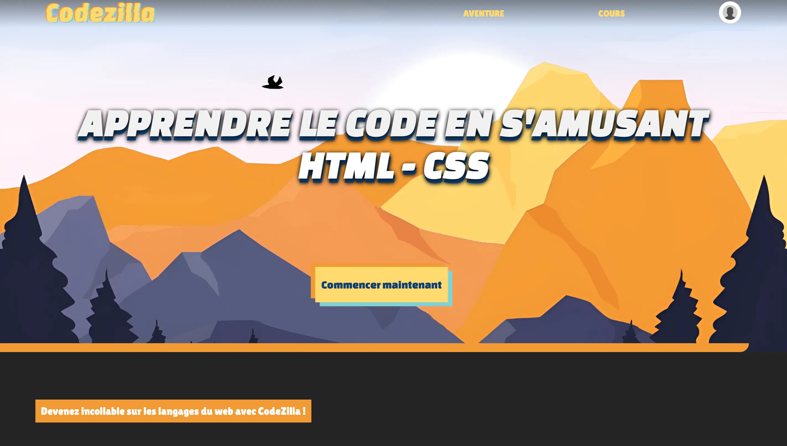
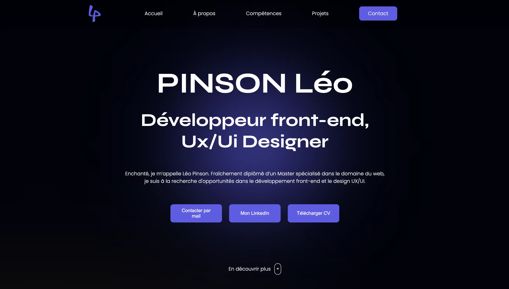

Tous mes projets

CodeZilla
CodeZilla est un projet de groupe que nous avions à réaliser durant notre deuxième année de Master.
Pour ce projet nous avions choisi de réaliser une plateforme d'apprentissage des langages de base
sous forme ludique pour débuter en développement web.

Jeu "Guess the number"
Création d'un jeu en javascript. Partant d'un programme de base pour débutants en ajoutant certaines
fonctionnalités (Compteur de vies, choix de la difficulté, ajout d'un mode sombre ...)
Projet
très formateur dans la compréhension de JavaScript.

Portfolio personnel
Création du portfolio que vous êtes actuellement en train de regarder :)
Projet comprenant la
réalisation d'une maquette Figma et du développement from scratch.
S'il Vin
S'il Vin est un projet de groupe que nous avions à réaliser en Master 2. Il s'agit d'une commande pour laquelle nous devions réaliser un site web pour un viticulteur qui souhaitait mieux
organiser son planning et ses rendez-vous. Il fallait alors un système d'agenda, ainsi qu'un site web avec un côté client et un côté administrateur.
Site projet photographie
Projet étudiant en Master 1 durant lequel j'ai créé un site sur la photographie aérienne.
Nous devions le réaliser via Wix pour prendre en main la création de site internet, mais j'ai décidé de le créer from
scratch afin de prendre en main le HTML et CSS le plus rapidement possible.
Express Emailing
Site internet sur lequel j'ai travaillé durant mon stage en deuxième année. Site hebergé sous Joomla 5. J'avais pour mission de moderniser ce dernier et d'ajouter des modules. Cela m'a permis la prise en main du CMS Joomla!
Evolve Skateboards France
Durant mon alternance, j'ai travaillé sur un site e-commerce géré via Shopify, où j'ai contribué à l'amélioration du
SEO, ajouté des fonctionnalités en Liquid, retravaillé des pages, et modifié le thème d'un autre site de l'entreprise.

WindMap
Projet étudiant en Master 1. WindMap est une application météo / carte des vents avec un aspect de réseau social. Pour ce projet, il fallait réaliser la conception graphique avec un logotype animé, le maquettage et prototypage figma.
CodeZilla
CodeZilla est un projet de groupe que nous avions à réaliser durant notre deuxième année de Master. Pour ce projet nous avions choisi de réaliser une plateforme d'apprentissage des langages de base sous forme ludique pour débuter en développement web.
Jeu "Guess the number"
Création d'un jeu en javascript. Partant d'un programme de base pour débutants en ajoutant certaines
fonctionnalités (Compteur de vies, choix de la difficulté, ajout d'un mode sombre ...)
Projet
très formateur dans la compréhension de JavaScript.
Portfolio personnel
Création du portfolio que vous êtes actuellement en train de regarder :)
Projet comprenant la
réalisation d'une maquette Figma et du développement from scratch.
S'il Vin
S'il Vin est un projet de groupe que nous avions à réaliser en Master 2. Il s'agit d'une commande pour laquelle nous devions réaliser un site web pour un viticulteur qui souhaitait mieux organiser son planning et ses rendez-vous. Il fallait alors un système d'agenda, ainsi qu'un site web avec un côté client et un côté administrateur.
Site projet photographie
Projet étudiant en Master 1 durant lequel j'ai créé un site sur la photographie aérienne. Nous devions le réaliser via Wix pour prendre en main la création de site internet, mais j'ai décidé de le créer from scratch afin de prendre en main le HTML et CSS le plus rapidement possible.
Express Emailing
Site internet sur lequel j'ai travaillé durant mon stage en deuxième année. Site hebergé sous Joomla 5. J'avais pour mission de moderniser ce dernier et d'ajouter des modules. Cela m'a permis la prise en main du CMS Joomla!
Evolve Skateboards France
Durant mon alternance, j'ai travaillé sur un site e-commerce géré via Shopify, où j'ai contribué à l'amélioration du SEO, ajouté des fonctionnalités en Liquid, retravaillé des pages, et modifié le thème d'un autre site de l'entreprise.
WindMap
Projet étudiant en Master 1. WindMap est une application météo / carte des vents avec un aspect de réseau social. Pour ce projet, il fallait réaliser la conception graphique avec un logotype animé, le maquettage et prototypage figma.